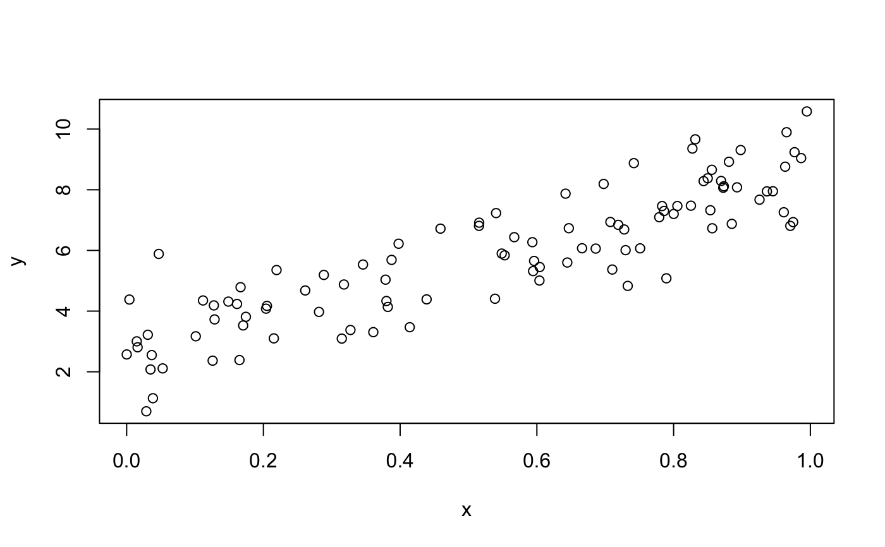

Add residuals to a data frame
add_residuals(data, model, var = "resid") spread_residuals(data, ...) gather_residuals(data, ..., .resid = "resid", .model = "model")
| data | A data frame used to generate the residuals |
|---|---|
| model, var |
|
| ... |
|
| .resid, .model | The variable names used by |
A data frame. add_residuals adds a single new column,
.resid, to the input data. spread_residuals adds
one column for each model. gather_predictions adds two columns
.model and .resid, and repeats the input rows for
each model.
df <- tibble::data_frame( x = sort(runif(100)), y = 5 * x + 0.5 * x ^ 2 + 3 + rnorm(length(x)) ) plot(df)m1 <- lm(y ~ x, data = df) df %>% add_residuals(m1)#> # A tibble: 100 x 3 #> x y resid #> <dbl> <dbl> <dbl> #> 1 0.000104 2.57 -0.0803 #> 2 0.00402 4.38 1.71 #> 3 0.0148 3.00 0.264 #> 4 0.0160 2.81 0.0618 #> 5 0.0287 0.697 -2.12 #> 6 0.0309 3.22 0.386 #> 7 0.0349 2.08 -0.782 #> 8 0.0367 2.55 -0.318 #> 9 0.0384 1.13 -1.75 #> 10 0.0469 5.88 2.95 #> # ... with 90 more rowsm2 <- lm(y ~ poly(x, 2), data = df) df %>% spread_residuals(m1, m2)#> # A tibble: 100 x 4 #> x y m1 m2 #> <dbl> <dbl> <dbl> <dbl> #> 1 0.000104 2.57 -0.0803 -0.248 #> 2 0.00402 4.38 1.71 1.54 #> 3 0.0148 3.00 0.264 0.113 #> 4 0.0160 2.81 0.0618 -0.0876 #> 5 0.0287 0.697 -2.12 -2.26 #> 6 0.0309 3.22 0.386 0.252 #> 7 0.0349 2.08 -0.782 -0.911 #> 8 0.0367 2.55 -0.318 -0.446 #> 9 0.0384 1.13 -1.75 -1.88 #> 10 0.0469 5.88 2.95 2.84 #> # ... with 90 more rowsdf %>% gather_residuals(m1, m2)#> # A tibble: 200 x 4 #> model x y resid #> <chr> <dbl> <dbl> <dbl> #> 1 m1 0.000104 2.57 -0.0803 #> 2 m1 0.00402 4.38 1.71 #> 3 m1 0.0148 3.00 0.264 #> 4 m1 0.0160 2.81 0.0618 #> 5 m1 0.0287 0.697 -2.12 #> 6 m1 0.0309 3.22 0.386 #> 7 m1 0.0349 2.08 -0.782 #> 8 m1 0.0367 2.55 -0.318 #> 9 m1 0.0384 1.13 -1.75 #> 10 m1 0.0469 5.88 2.95 #> # ... with 190 more rows